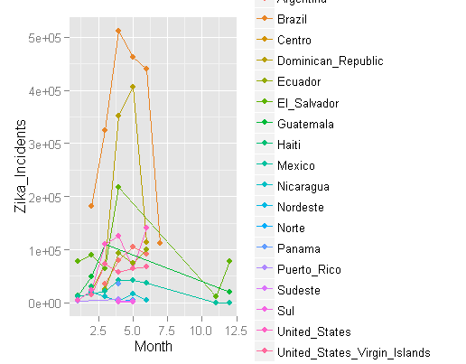

The Zika virus inherits its name from a forest in Uganda where the virus was first isolated in 1947. The virus is spread mainly by the Aedes aegypti mosquito. Men infected with Zika can transmit the virus to their sexual partners. In February of 2016 the World Health Organisation declared the outbreak a Public Health Emergency of International Concern, even though the outbreak began early in 2015 and since then has been sweeping through South America. Yay! A declaration!
A combined effort from the internet hivemind on github has seen a unified effort to collect formatted data that is made publicaly available. The data can be accessed HERE. I've taken the currently available data and did a few simple plots, just to see whats where.
Trends by Country
The plot below shows the number of cases per month by country. Due to the disproportionate number of cases witnessed in Columbia as compared to the other countries the resolution of the chart renders it a bit difficult to discern anthing outside of Columbia's plight.
So then Columbia is removed to take a closer look at the other country trends. The plot below shows the other countries, excluding Columbia. Topping the chart is Brazil and the Dominican Republic. Interesting to note is that for the three countries experiencing the most number of Zika cases, all three of them saw a sharp increase in the number of cases between months 2 to 3 in the cycle, then a sharp decline, Can these correspond to mosquito mating season then treatments? Also, the immedate lack of cases after June is suspect. I'll have to figure out if thats a data collection problem or data representation.. El Salvador seems to be the only country where the number of cases are once again rising at the end of the cycle.
The CDC issued warnings in south Florida, specifically Wynwood (The haven of hipsters), and the internet does what it does best by making light of a potentially terrible situation:
Lets take a closer look at whats happening in the US. The barchart below shows the total number of cases per state and separates them by category. An infection of the virus as mentioned above can be via sexual transmission or a mosquito. Cases are categorized as either 'Local' or 'Travel' depending on whether the patient caught the virus at home or abroad. If the virus was contracted locally there is more cause for concern since then there is a risk of infection by mosquito, in which case the number of cases can increase rapidly.
The plot shows that Puerto Rico, The US Virgin Islands and American Samoa account for all the cases of local contraction - which makes sense given their geographical tropical locations. Florida accounts for the most cases of all states, and from the time of data collection, all of them were from travel. This too makes sense given the diverse demographic of Florida. Montana has no cases. People there don't ever leave and mosquitoes don't stand a chance of survival (a terrible joke attempting to highlight poor interpretation.) But what about the trends?
The plot above shows the trends by state. With florida in the picture, not much can be discerned about the other states. SO we know that florida peaked in about month 4 of the cycle and then decreased dramatically. Lets remove Florida from the plot and look at the others.
Not having Florida in the dataset certainly improved the resolution, but my legend has been truncated! I'll have to fix that.. Meanwhile, the trends seem to show an overall increase from months 2 to 3 , followed by a decrease, then a spike again from months 5 to 6. No epidemic has been announced just yet, but given the impact on fetal development, one can understand why over 5000 cases of Zika in a state would be cause for concern. As the dataset grows, I will continue my analysis, perhaps even integrate some prediction if possible. Watch this space.